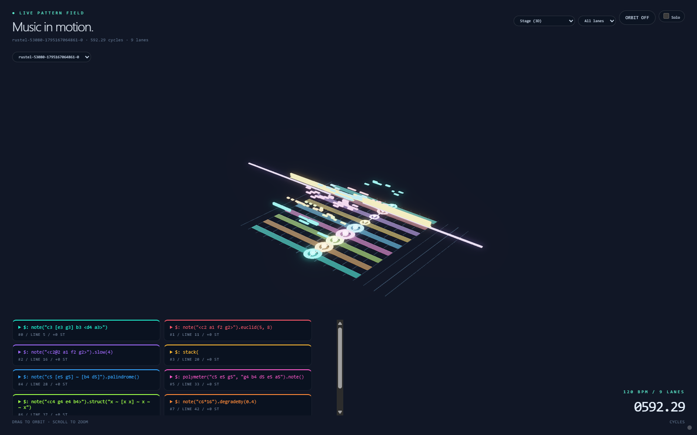
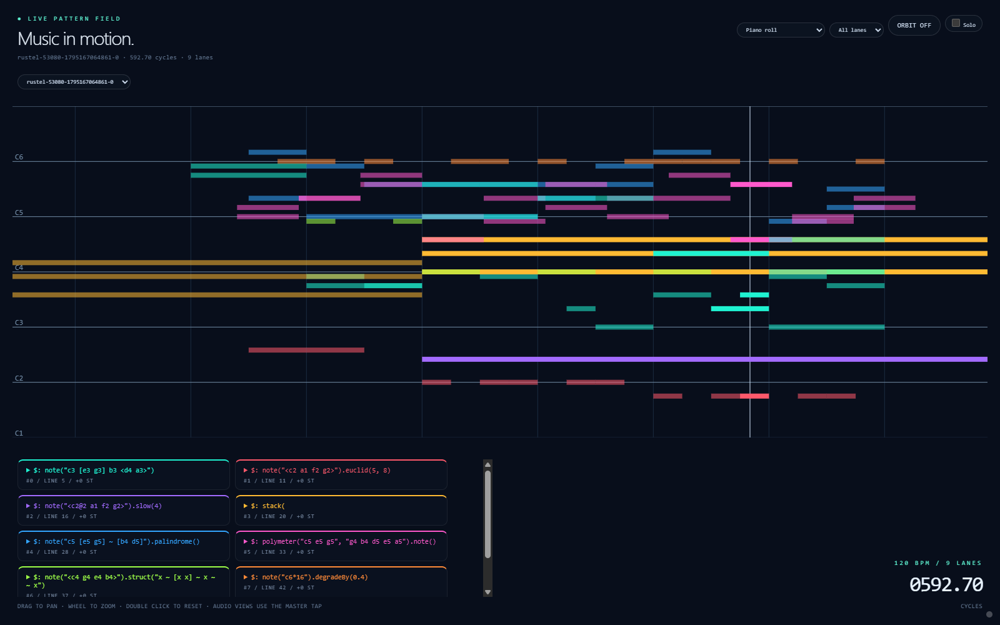
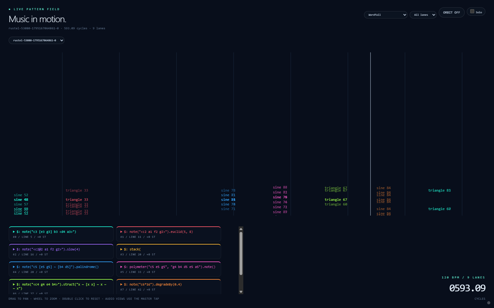
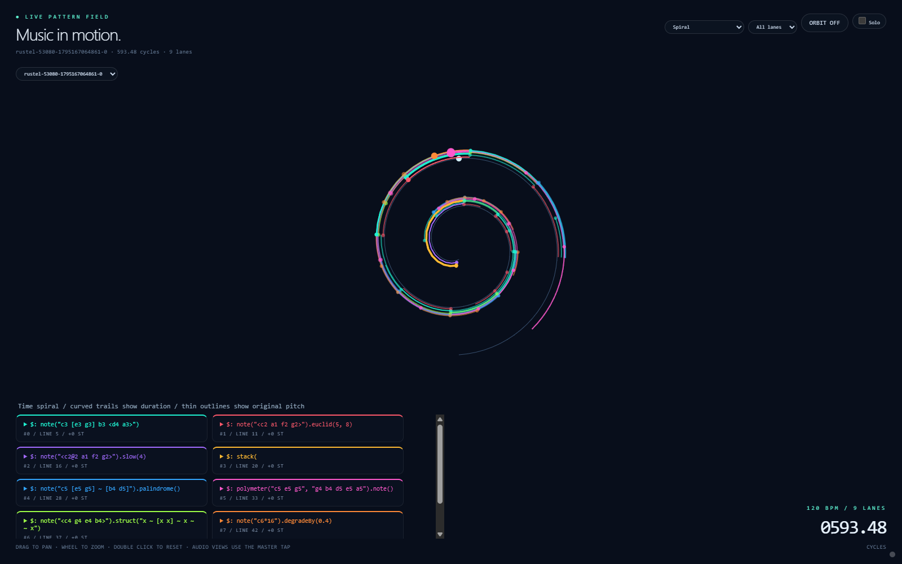
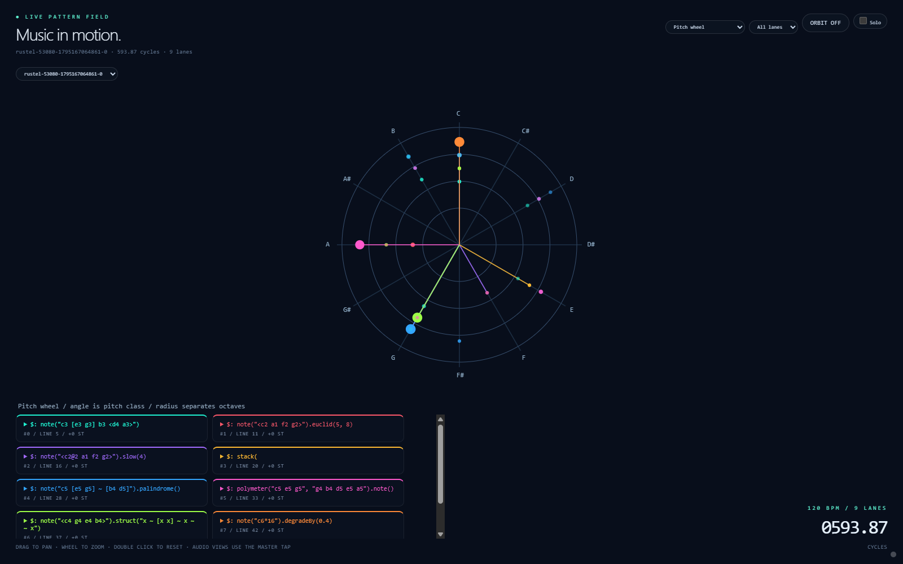
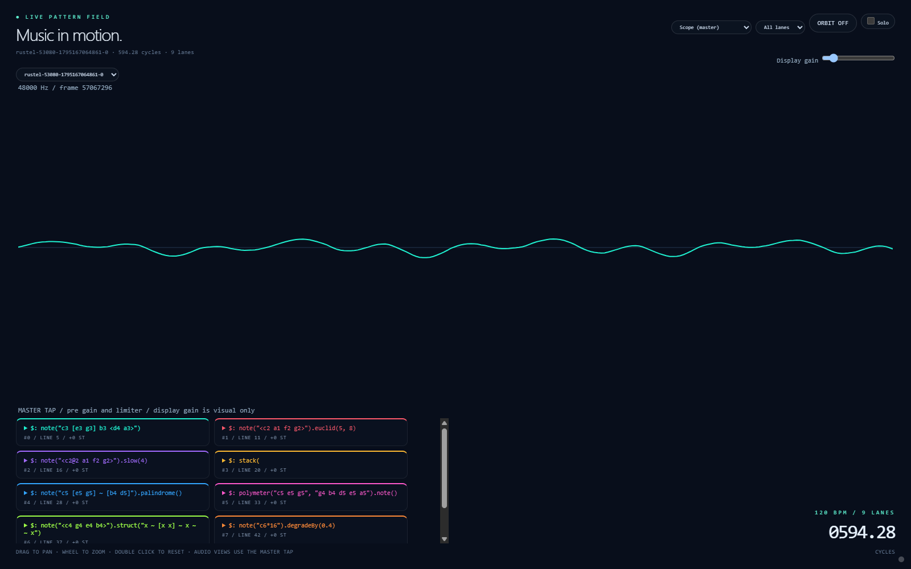
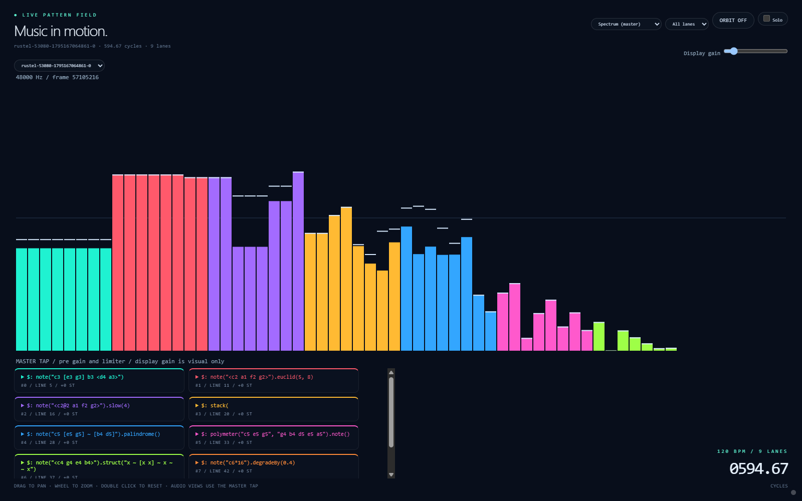
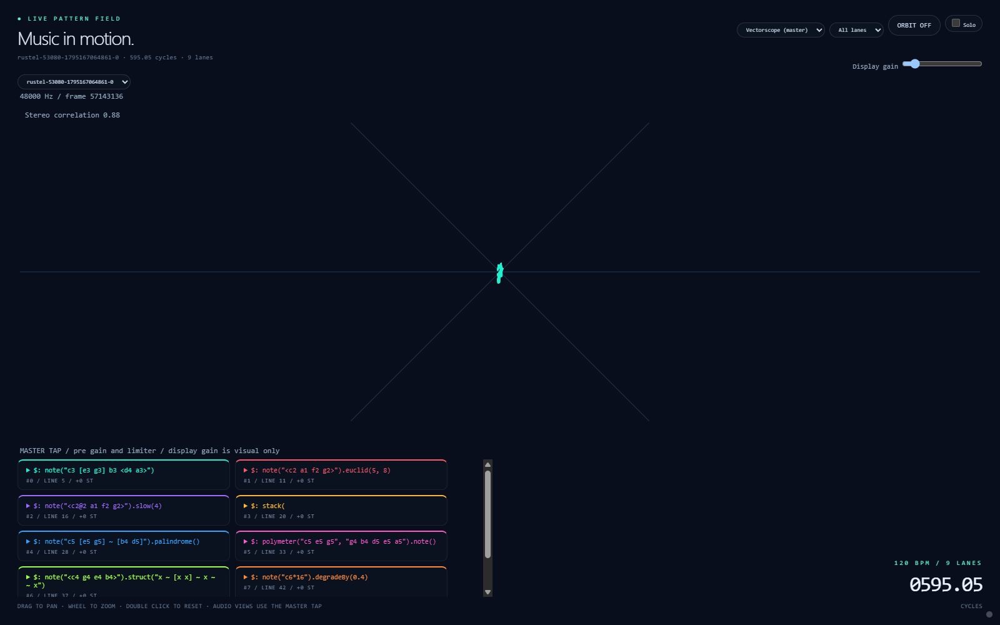
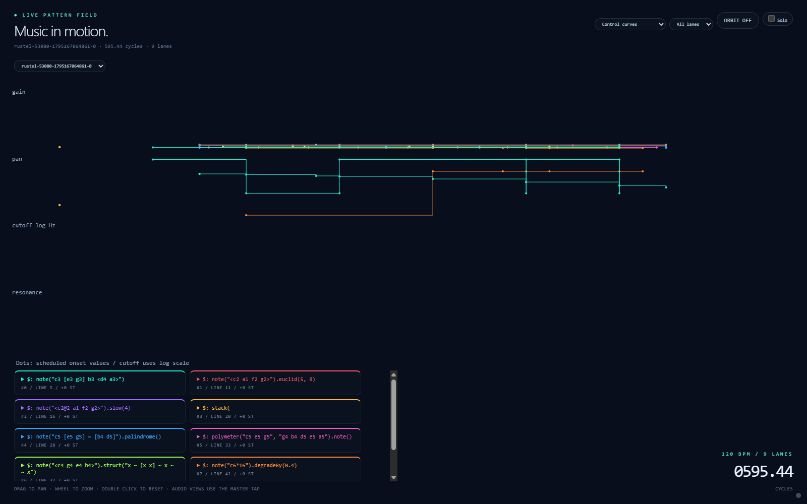
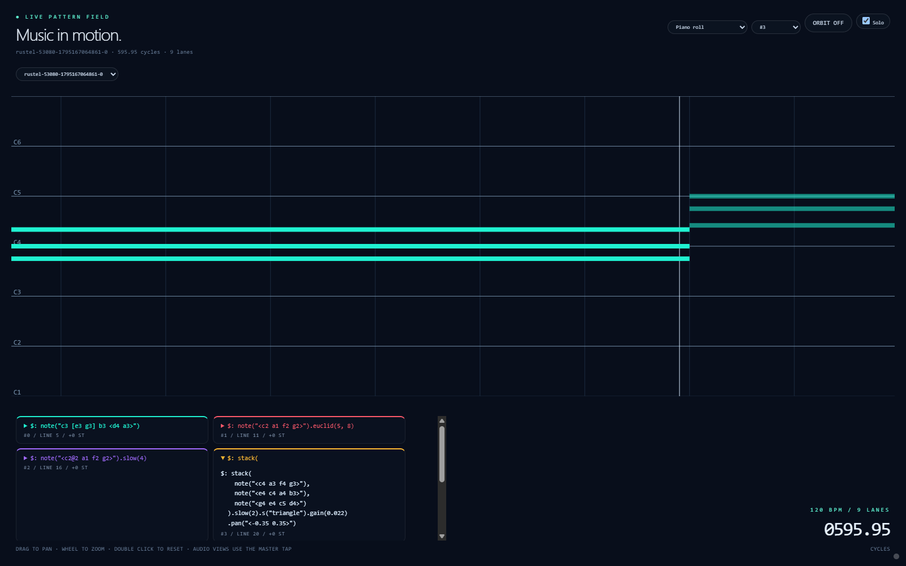

Rustel integration contribution galleryUPSTREAM CONTRIBUTION PREVIEW · 20 NOVEMBER 2026
Live Rustel patterns in Bespoke and Nightshade
A working prototype for discovering, visualizing, transposing and soloing lanes from an independent Rustel instance. These screenshots show the current Nightshade browser UI. Rustel owns playback; Bespoke also has a separate native viewer.
Click an image for full resolution. The package is for review; it has not been submitted upstream.

Stage
Live scheduled notes arranged by time, pitch and lane, rendered by Nightshade’s WebGPU worker.

Piano roll
Horizontal time and vertical pitch show the resolved event stream across the demo lanes.

Wordfall
Lane columns display falling event labels. This browser layout differs from Bespoke’s vertical note-block view.

Time spiral
The native Bespoke mapping: time controls angle and radius; pitch adds a small radial offset. Curved trails represent duration.

Pitch wheel
Twelve fixed pitch-class directions; radial position separates octaves. This is distinct from the time spiral.

Scope
Rising-edge-aligned waveform from the master tap before master gain/limiting. Display gain is visual only.

Spectrum
Logarithmic display bands with smoothing and peak hold from the same master analysis feed.

Vectorscope
Stereo mid/side display with correlation, derived from master left/right samples.

Control curves
Gain and pan samples are present in this demo. Cutoff/resonance are empty because the score does not supply those controls; these are onset values, not continuous LFO queries.

Solo and source
Lane #3 is selected and Solo is checked. Its full stack/voice source is expanded; the command was acknowledged by Rustel and released after capture.